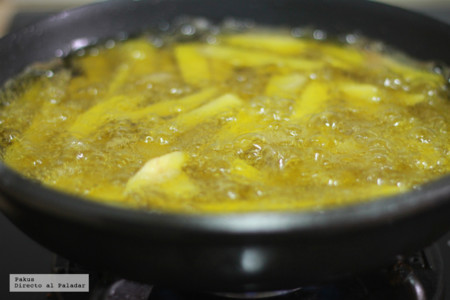

¡Receta para preparar Papas Fritas!

Ingrédientes
Para 4 personas:
- papas......................... 3 u
- Aceíte de Girasol........ 1 L
- Sal al gusto
Cómo hacer las mejores papas fritas del mundo mundial
Dificultad: Fácil
- Tiempo Total............... 40 minutos
- Elaboración.................. 10 minutos
- Cocción........................ 30 minutos
Las papas
Obviamente, en la elaboración de las papas fritas, es importante la elección del ingrediente principal, la patata. Para hacer papas fritas, las mejores variedades son: las Monalisa y la Kennebec, entre otras. Por lo menos, hay que comprar papas que sean para freír y no de las variedades que resultan mejores para cocer o guisar.

Para preparar las papas fritas, pela las papas y córtalas en rodajas de 1 cm de grosor aproximadamente. Corta cada rodaja en varitas de 1 cm de ancho y unos 5 de largo y continuamos con todas las rodajas hasta que ya tenemos las papas listas para la siguiente fase.
El remojo ¿sí o no?
Una vez picadas las papas, recomendamos dejarlas en remojo en un plato hondo. Así evitamos que se pongan marrones como consecuencia de la oxidación, y además, eliminamos parte del almidón que tienen las papas, evitando así que al freírse se peguen unas a otras.

El dejar en remojo las papas fritas antes de freírlas es opcional pero a mí sí me parece adecuado, limitando el remojo a unos 15 minutos, que son suficientes para eliminar la mayoría del almidón y que aprovechamos para preparar las sartenes, el aceite, etc.
¿Cuándo echamos la sal?
Aunque siempre es mejor dejar las papas un poco sosas y añadir la sal al final cuando ya están fritas y crujientes, yo prefiero espolvorear ligeramente las papas tras su remojo con un poco de sal fina. Tras mezclar bien removiendo las papas con las manos, procedemos a freírlas con la técnica que indicaremos a continuación.
Una vez fritas, probamos una patata y espolvoreamos más o menos cantidad de sal sobre las papas en función de cómo nos hayan quedado. Normalmente será suficiente con añadir un pellizco sobre las papas terminadas.
La freir en dos tiempos, a dos temperaturas
Para freír bien las papas hacen falta dos sartenes, una para la primera parte del proceso en la que freiremos las papas a 140º durante unos 7 u 8 minutos, y otra para la segunda fase, en la que doraremos y dejaremos crujientes las papas friéndolas a 190º durante unos cinco minutos más.

Si quieres hacer esto en freidora eléctrica, podéis freír las papas a fuego lento, sacar la canastilla de la freidora dejando que escurran el aceite y mientras poniendo el termostato al máximo, volviendo a sumergir las papas en cuanto el aceite alcance la temperatura de 190º para conseguir dorar bien las papas.
Fuente: Cómo hacer las mejores patatas fritas del mundo mundial